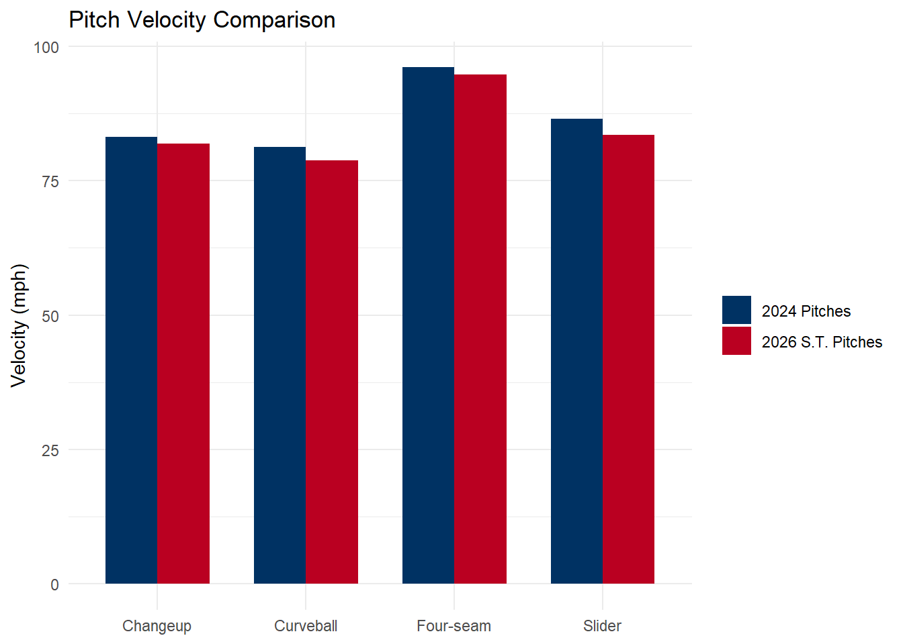

| Pitch Type | Pitches | Velo | IVB | HB | Spin Rate | VAA | HAA |
|---|---|---|---|---|---|---|---|
| Sinker | 1368 | 97.2 | 3.1 | 13.3 | 1922 | -6.71 | 0.18 |
| Knuckle Curve | 741 | 85.2 | -9.9 | -12.5 | 2489 | -9.46 | -2.57 |
| Splitter | 256 | 92.3 | -0.5 | 10.3 | 1478 | -7.79 | 0.14 |
| Four-Seam Fastball | 239 | 97.9 | 13.3 | 8.5 | 2225 | -5.09 | -0.38 |
| Slider | 170 | 89.1 | -0.2 | -2.1 | 2427 | -8.16 | -2.04 |
| Changeup | 10 | 86.9 | -0.6 | 5.8 | 1221 | -7.73 | 0.38 |
The Halos Need a Hail Mary

Jose Soriano was named the Opening Day starter for the Halos this past Tuesday, as announced by first-year manager Kurt Suzuki. This afternoon will mark Soriano’s first Opening Day nod. The 27-year-old starter was selected by the Pirates from the Angels in the 2021 Rule 5 Draft and was returned after that season.
Soriano separates himself from other major league starters with a hard sinker that averages 97.2 mph, placing him in the 95th percentile in sinker velocity. The flame-throwing righty is now tasked with leading an Angels staff that posted the third-highest ERA in baseball last season. Can Soriano anchor this staff?
The foundation of Soriano’s arsenal is that sinker, which he throws 49% of the time. It plays well against hitters on both sides of the plate, but it is especially effective against right-handed hitters. Soriano complements the sinker with a knuckle curveball, which he throws 27% of the time, bringing his combined usage of those two pitches to 76%. Batters can generally assume that one of the two is coming, yet right-handed hitters in particular still struggle to square them up.
By whiff% — the percentage of swings that result in a swing-and-miss — Soriano’s sinker and knuckle curve against righties rank in the league’s top 20% and 10%. But strikeouts and whiffs are not the most eye-catching part of Soriano’s profile. He stands out even more when it comes to batted-ball metrics.
Simply put, Soriano does not allow many hard-hit balls in the air, especially to the pull side. That suppresses his home run rate and helps keep his ERA down even when he is not locating perfectly or generating whiffs. Soriano will carry another heavy workload this season, which could create issues over the course of a long year. His 169 innings pitched in 2025 were by far the most of his career, and his production suffered as the season wore on.
At the All-Star break, Soriano owned a 3.90 ERA, but that mark finished at 4.26 at season’s end. He allowed eight home runs in his final 56 innings, double the number he had allowed before the break in roughly half the innings.
His arsenal looked strong in spring training, as he added velocity to both his sinker and four-seamer. However, Soriano also appeared to be experimenting with his pitch mix, with the four-seam fastball becoming his primary pitch. He was most likely just refining it to add another weapon to his mix, but he should not move too far away from his elite sinker once the season begins.
The Angels made one notable move this offseason to upgrade their staff from 2025, trading for Grayson Rodriguez from Baltimore. Rodriguez was the No. 2 pitching prospect in baseball behind Andrew Painter in 2023. Since the end of the 2024 season, however, he has not pitched in an MLB game. A mix of lat and elbow injuries plagued him throughout last season as he worked his way back, resulting in an entire missed season. These injuries during his developmental seasons lower the possible ceiling he once had.
To make the deal, the Angels traded away outfielder Taylor Ward, who is coming off a 36-homer season. Ward has gradually developed a more home-run-oriented approach over the past three years, increasing his fly-ball rate each season, thus giving himself more opportunities to leave the yard.
Rodriguez, though, appears to be trending in the opposite direction. In spring training, his pitches lost velocity compared to his last appearance in 2024. He was down about 3 mph on all of his offspeed pitches, and his four-seamer now sits at 95 mph instead of 96.1. Other spring metrics were not encouraging either: he was leaving his curveball in the heart of the zone 13% of the time, leading to a wave of hard-hit contact, and his overall hard-hit rate in camp was 50%.
| Value | Percentile | |
|---|---|---|
| Hard Hit% | 50% | 93rd |
| Heart%(Curveball) | 13% | 98th |
| Season | Four-Seam Velo | Curve Velo | Changeup Velo | Slider Velo |
|---|---|---|---|---|
| 2024 Pitches | 96.1 | 81.3 | 83.1 | 86.5 |
| 2026 S.T. Pitches | 94.8 | 78.8 | 81.9 | 83.5 |

Those warning signs led the Angels to place him on the IL with shoulder inflammation; manager Kurt Suzuki deemed it as a case of “dead arm”. Not the optimal return thus far for a 36-home run outfielder.
The loss of Rodriguez before the season began prompted the Angels to add another young arm to the rotation. Ryan Johnson is now slotted into the fifth spot, bringing the average service time of Angels starters to 2.8 years. The No. 7 prospect in the Angels system made history on Opening Day in 2025, skipping the minors entirely at age 22 and jumping straight from Dallas Baptist University to the majors.
Skipping the minors is an incredible feat, but Johnson was rushed. He posted a 7.36 ERA in 14 appearances and was sent down to High-A by May. He simply allowed too many home runs: 20% of the fly balls he gave up left the yard. Part of that can be traced to the fact that 20% of his allowed fly balls were pulled, which placed him in the 1st percentile. Pulled fly balls are a home run hitter’s best friend and a pitcher’s worst enemy.
Johnson has improved since his first major league stint, and he showed some of that development in spring training, most notably in the shape of his sweeper. He dropped its average velocity by 4 mph to a sluggish 79 mph, making it one of the slowest sweepers in baseball. That gives the pitch more bend and creates greater separation from his cutter. If he can locate and sequence those pitches effectively, he could produce strong strikeout numbers.
Still, the most important areas for Johnson’s development are limiting home runs and walks, the two factors that most hold back a pitcher with this kind of tunneling potential built around his primary cutter. His 11% walk rate in the majors last season was poor enough to place him near the bottom of MLB.
| Stat | Percent | Percentile |
|---|---|---|
| BB% | 11% | 3rd |
| HR/FB% | 20% | 41st |
| Pull FB% | 20% | 1st |
Maybe the Angels’ fate does not rest in the hands of God after all. If the question marks surrounding Grayson Rodriguez and Ryan Johnson turn into check marks, the Angels’ starting five could be trending upward in 2026. Soriano, meanwhile, should once again be effective with his power sinker, keeping the ball on the ground.